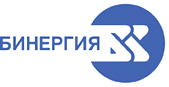

|
 |
 | Препараты, представляемые БИНЕРГИЯ АО (Россия) | 143910 Московская обл., г. Балашиха, ул. Крупешина, д. 1 Тел.: +7 (495) 580-55-02 Факс: +7 (495) 580-55-03 E-mail: info@binergia.ru https://binergia.ru |
| Торговое название | КФГ | Владелец рег. удостоверения |
| АРТИКАИН (ARTICAINE) раствор д/инъекций | Местный анестетик для применения в стоматологии | зарегистрировано |
| АРТИКАИН С АДРЕНАЛИНОМ (ARTICAINE WITH EPINEPHRINE) раствор д/инъекций | Местный анестетик с сосудосуживающим компонентом для применения в стоматологии | зарегистрировано |
| АРТИКАИН С АДРЕНАЛИНОМ ФОРТЕ (ARTICAINE WITH EPINEPHRINE FORTE) раствор д/инъекций | Местный анестетик с сосудосуживающим компонентом для применения в стоматологии | зарегистрировано |
| АРТИКАИН-БИНЕРГИЯ (ARTICAINE-BINERGIA) раствор д/инъекций | Местный анестетик | зарегистрировано |
| АРТИКАИН-БИНЕРГИЯ С АДРЕНАЛИНОМ (ARTICAINE-BINERGIA WITH EPINEPHRINE) раствор д/инъекций | Местный анестетик с сосудосуживающим компонентом | зарегистрировано |
| БИНАВИТ ФОРТЕ (BINAVIT FORTE) таб., покр. пленочной оболочкой | Комплекс витаминов группы В | зарегистрировано |
| БИНАВИТ® (BINAVIT) раствор д/в/м введения | Комплекс витаминов группы В | зарегистрировано |
| ДЕНТАБАЛАНС РЕЛАКС ЭФФЕКТ СИНБИОТИК 8 БИО КОМПОНЕНТОВ (DENTABALANS RELAX EFFECT) порошок д/пригот.р-ра д/приема внутрь | БАД для поддержания микрофлоры полости рта | зарегистрировано |
| ДЕНТАБАЛАНС СТРОНГ ЭФФЕКТ СИНБИОТИК 7 БИО КОМПОНЕНТОВ (DENTABALANS STRONG EFFECT) порошок д/пригот.р-ра д/приема внутрь | БАД для поддержания здоровья костной ткани и зубов | зарегистрировано |
| ДЕНТАБАЛАНС ФРЕШ ЭФФЕКТ СИНБИОТИК 9 БИО КОМПОНЕНТОВ (DENTABALANS FRESH EFFECT) порошок д/пригот.р-ра д/приема внутрь | БАД для устранения галитоза (неприятного запаха изо рта) | зарегистрировано |
Copyright © Справочник Видаль «Лекарственные препараты в России», Москва, Россия